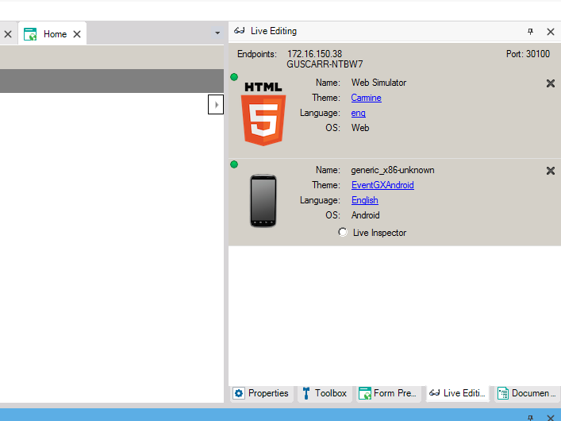
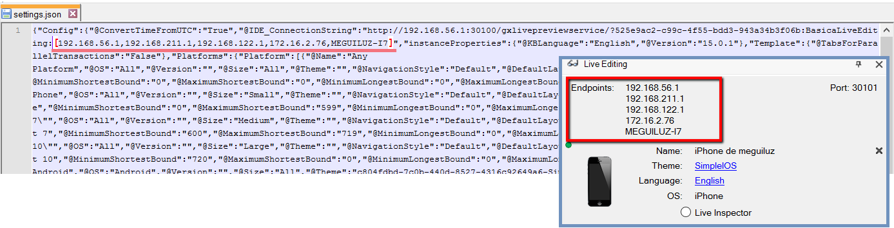
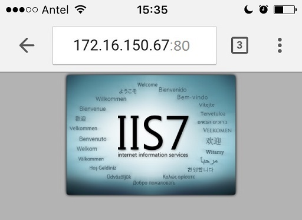
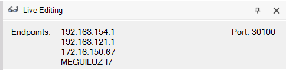
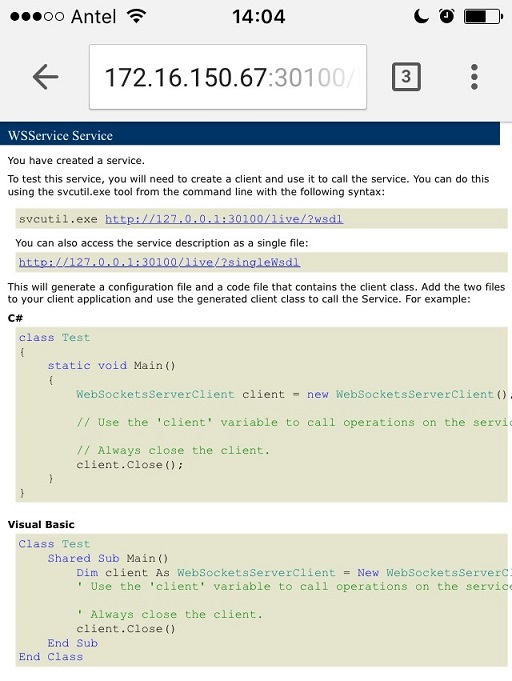
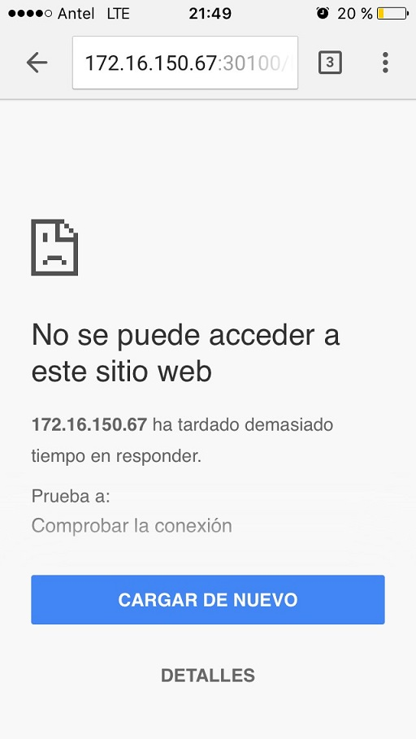
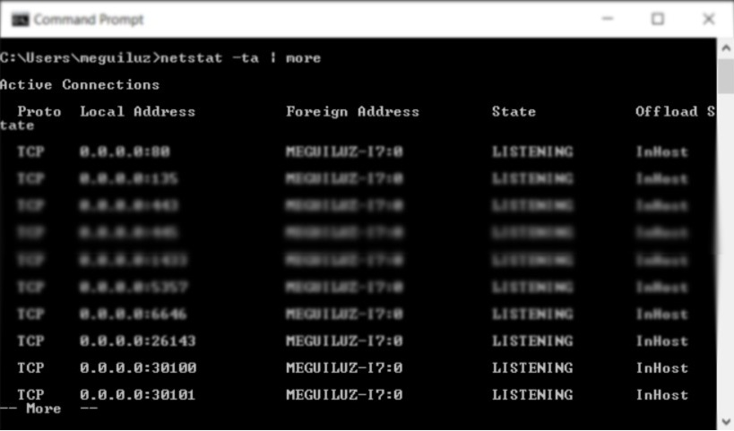

Live Editing is a very important functionality in GeneXus 15. It allows you to modify different parts of the design and behavior of a Web or SD app, without generating or compiling anything, and without needing to save those changes. To do this, the application is connected to the IDE in a way which allows the communication between them (the changes’ impact). In this page we will specify how this connection is established, and some tips to help you in case of any problems with it. General behavior of the connectionTo simplify the understanding of this page, let’s define two terms: Server- it’s the PC where GeneXus is being executed (the IDE). Client- it’s where the application is being executed. It can be the computer where the Web application is executed (a web server, in the cloud, or the PC itself) or the device (Android or iOS) where the application is executed (even using the [Knowledge Base Navigator]). The basic behavior is that the Client is connected to the Server using TCP/IP, so both must be in the same network. How can I know if there’s a Client connected to the Server?In the IDE’s output, a message is displayed, similar to “Live Editing Client accepted:Device_Name” Likewise, the Live Editing window shows the connected Clients. In the following image, you can see that there is a Web application and a SD application connected to the Server, as well as information referring to those Clients (computer, theme, etc.).  Also, in the Client a message will appear, indicating that the connection to the Server was successful. The message, whether on a Web app, an iOS app, or an Android app, will be “Connected to LivePreview at xx.xx.xx.xx on port 30100”.
FAQWhat IP/Port is used for the connection?When the “Live editing” mode is executed, all the IPs where the Server is listening are detected; that is to say, all the ones where the Client could establish the connection. Those directions are also included in the “settings.json” file. This file is included in the app, and hence the IPs/Ports which will be used in the Client to connect to the Server will be included as well.  If you are executing in the Web this information is generated in the GXCFG.JS. At port level, the port 30100 is used, and if that one is already in use, the port 30101 is used, and so on until the port 30150. This “poll” is to avoid executing the application once again after closing and opening the IDE (the port can change). If the Server listens in any of the IPs/Ports previously mentioned, the connection will be established. What happens if there are changes in the network?When the change is detected, the message “Network has changed. You may need to regenerate the main object to use Live Editing” is displayed in the IDE. If the client can still connect from one of the IPs/Ports then nothing is required. If the connection cannot be established, you must execute the application again from the IDE, so that the list of IPs in the Client is updated. What happens if you have more than one instance of GeneXus running in the same PC?To be precise, for the connection between the Server and the Client the KB’s GUID is used, besides the IP/Port. Hence, when the Client wants to establish the connection, if the IP/Port to which it connects is being used by another KB, it tries to connect to another port. If a Client (app) tries to connect to a Server (IDE) but the app does not match the KB, the following message will be displayed in the IDE: Live Editing Client rejected:'Device_Name'
TroubleshootingThe connection between the Client and the Server (Live Editing) does not workThe only requirement for the connection to work is that the Client and the Server must be in the same TCP/IP newtwork; hence, first you should verify that this is the case. There are many mechanisms to do this, for example: if you have an HTTP server in the Server (in the PC where GeneXus is executed you have IIS or Tomcat) you can test the HTTP connection. Testing the connection using HTTP Try to connect from a browser in the Client using the IPs shown in the IDE and the port being used (default for IIS is 80 and for Tomcat 8080).  If you CAN’T successfully access the application server then Live Editing will not work either. Contact you Network Administrator to check for connectivity. Testing the HTTP to Live Editing connection If the HTTP connection Works, then the next step is to try with the port shown in the IDE:  To check that the connection can be established successfully using the correct port, the URL you should use is “IP:Port/live/". If the port is not blocked, the device’s browser will show an answer similar to the following:  Note: This answer can be seen if the Server is Windows 10; in Windows 7 the browser’s answer is simply a blank screen. If the port is NOT accessible, a screen similar to the one shown below will appear.  Note: in Windows 7 the connection might just be “frozen”. If this happens, it means that the port is blocked (or closed). It’s convenient to disable your Firewall and turn off your antivirus to be able to identify what is making it inaccessible. Then, in any of the options, you should be able to configure the “rules” so that the port is not closed. The connection from HTTP to the Live Editing works but from the Client (app) it doesn’t If you can access the “IP/Port/live” from the Client’s browser but the Client (app) still doesn’t connect to GeneXus’ IDE, then you should proceed to investigate deeper to identify the cause of the problem (not being able to connect). Make sure the server is listening to the IDE’s port. For this you can run the following command: netstat -ta There, look for the port:  If the port is not shown, it means that it’s being blocked. You can try to execute the application once again, in order to make sure that the settings.json file, which we mentioned earlier, is up to date. You can also verify that this file contains an entry with the name IDE_ConnectionString, where you can see the same IPs as the ones shown in the IDE. Even though the Live Editing is turned off, the following message is still shown: Connected to LivePreview at xx.xx.xx.xx on port NNNNProblem Live Editing was used in the web but later turned off (changing to “release” mode), but at runtime the message “Connected to LivePreview at xx.xx.xx.xx on port 30100” is still show. Solution: Live Editing in the web is implemented through a JS (GXCFG.JS). The problem is that the JS can be cached in the browser. You can delete the cache or open an incognito window to check if this is the problem.
Even if you want to use Live Inspector, IDE does not show connection in LiveEditing tab in IDE. Problem: Solution: |
| Backlinks |
| Toc:Live Editing |